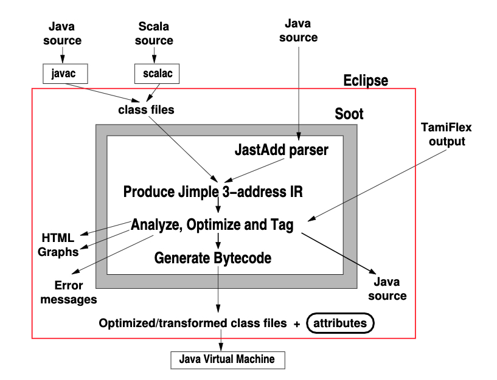

序言
跬步而不休，跛鳖千里。
今天来学习Soot，主要来膜拜这篇神文。
http://sable.github.io/soot/resources/lblh11soot.pdf
I. INTRODUCTION
Soot是一款针对Java语言进行静态分析的框架，诞生于2000年。
它允许研究人员在它的基础上开发静态分析工具。
针对它的核心来说，它是一款编译器。
它接收JVM字节码文件或者Java源码，并且主要返回Java字节码。
Soot的主要特点：
- 简化JVM的字节码文件，转换为三地址码的中间表示形式；
- 大量的指针分析；
- 调用图构造算法API；
- 可以生成可执行的JVM字节码文件；
Ⅱ. FEATURES
##程序内特征 intraprocedual
Soot的基本中间代码表示形式是Jimple，Jimple就是一种三地址代码。
Jimple诞生的初衷是由于：
直接分析字节码是很困难的。
尽管可以为Java字节码构造控制流图，但是往往隐式的堆栈活动会掩盖住数据流。
并且对于一个给定的字节码指令s来说，基于堆栈的s的输入往往并不是在变址处产生的。
所以soot的作者发现，将数据存储在指定的局部变量中，而不是隐式堆栈中，可以使得数据的局部流(沿着Jimple的控制流图)更加明显。
Jimple内的本地变量会根据（定义-使用链）(define-use chains)进行分类。
Soot内部还有其他中间表示形式：
Shimple是基于SSA版本的Jimple；
Baf和Grimple是用来生成字节码的；
Dava是一个抽象的基于语法树的中间表示，它是由jimple IR反编译生成的。
Java字节码包含了原始源代码的类和方法结构等许多信息，所以在Soot的分析过程中，Soot可以自由地利用类和方法名信息。
Soot还可以为它所分析的方法提供行号和变量名信息。

Soot最强大的一点是用户可以通过指定抽象类和实现该抽象的函数来创建数据流分析。
Soot还为常见的抽象类提供了适配的数据结构实现。
过程间分析 interprocedural
复杂的静态分析需要调用图和指针信息，这从根本上讲是一个过程间的问题。
Soot包括Spark指针分析工具包，并且还支持基于BDD的PADDLE指针分析框架，该框架增加了上下文相关性。
调用图 Call Graph
Soot框架提供了调用图信息。对于每个调用点（call site），静态分析（尤其是过程间分析）需要知道该调用点的所有可能调用目标。
Java的面向对象性质使此问题复杂化，因为被调用者（或目标）的身份取决于虚拟调用的接收者对象的运行时类型，而Java程序中的大多数调用都是虚拟调用。
Spark的调用图构造算法会计算出运行时可能发生的一组调用的近似值。调用图边连接源（表示为（方法，语句）对）和目标（始终是方法中的第一个语句）。
Over-approximation意味着在程序的任何执行中可能发生的任何调用都必须出现在调用图中。
Spark实现了许多不同的调用图构造方法，包括类层次分析和快速类型分析。
但是，我们发现最有效的调用图构造方法是按需进行的，并在计算点对集的同时构建调用图，从CHA调用图作为可到达组的初始近似值的开始方法。
可以通过查询call site生成调用图； 通过调用方法； 或“向后”（按目标方法）。
出于效率考虑，Spark返回迭代器作为调用图查询的结果。 Spark还为客户提供了任何方法或语句的可传递目标集。 最后，Spark还公开了程序的可访问方法集-从程序的入口点可传递地访问的方法集（除程序的main（）方法外，还包括类初始化等）。
指针分析 Pointer Analyses
许多静态分析需要指针信息：
它们需要知道两个变量p和q在运行时是否可以引用同一堆对象。
Spark实现了上下文无关的基于子集的指向分析（Andersenstyle）。
分析可以查询要点分析，并获得由PointToSet表示的局部变量或对象字段所指向的对象的抽象。
PointsToSet支持两个查询：
- 集合中对象的可能类型集合；
- 两个PointsToSet对象是否具有非空交集。 可能的类型将有关方法调用的可能接收者的信息提供给变量，该变量的值指向设置的模型。 如果变量p和q具有非空交点的指向集，则它们可能指向同一对象。
副作用分析 Side Effects
副作用分析建立在（任何基于Soot的）指向和调用图分析之上。
副作用分析可以确定语句s是否可能依赖于语句s’。 它通过为每个语句定义读写集，然后比较它们的交集来工作。
两个具有不相交的读写集的语句是独立的，而先写一个值的语句后跟另一个读相同值的语句遵循一个依赖关系。
Spark的替代和扩展
尽管Spark是Soot的基本调用图和指针分析生成器，但它不是唯一的选择。
PADDLE 提供了基于BDD的上下文敏感指针分析； 但是，它在构建时和在运行时都需要额外的依赖关系。
到目前为止，虽然我们已经描述了指针分析都是可能别名分析may-alias，但Soot还包含了过程内必需别名分析must-alias。
对象代表将此必须别名分析与过程内和整个程序的可能别名分析相集成； Spark是整个程序可能别名分析的来源之一。
反射
许多Java程序都使用反射来按名称访问类或其成员。
这种反映性访问很难静态分析：
类和方法名称可以在运行时计算，也可以从静态分析无法访问的文件中加载。
一种解决方法是在运行时记录有关反射用法的信息（需要训练），并在执行调用图和指向分析时使用此信息。
Soot输出
Soot支持使分析结果可用的多种机制。
开发人员的选择包括：
1）输出转换后的类文件；
2）输出错误信息；
3）生成包含分析结果的HTML或图形；
4）创建（潜在转换的）类文件，并从程序分析中获得结果。
一个使用Soot变换类文件的工具示例是DUSC工具。
该工具通过首先对应用程序执行保留语义的转换以实现动态更新，然后为应用程序的新版本创建Java类，从而可以在运行时进行交换，从而实现Java程序的动态软件更新。
Soot还可以实现不保留语义的转换。
Tkachuk和Dwyer使用Soot生成了系统环境行为的不可执行的摘要，从而简化了系统的后续模型检查。生成的环境摘要包括实际环境的所有可能影响，并使用Java字节码表示，并用特殊的建模原语（使用方法调用编写）扩充了这些摘要。
III. WORKING WITH AND EXTENDING SOOT
运行Soot
在命令行上运行Soot是与Soot交互的最简单方法。
Jimple代码作为Java字节码的清理版本对人类很有用。实际上，我们专门为此目的创建了Jimple的Jimp方言。它牺牲了可读性的完整性，例如通过省略字段的全名。完整的Jimple可以重新编译为Java字节码，而Jimp对于手动检查最有用。
Soot也可以优化字节码。但是，现代Java虚拟机和实时编译器在优化代码方面做得非常出色（使用仅在运行时可用的信息），因此Soot的优化不会提高常规字节码的性能。该优化对于非标准字节码（例如abc AspectJ编译器生成的字节码）很有用。
运行Soot的另一种方法是通过其Eclipse插件。 Eclipse插件允许用户调用Soot（或其增强版本）。但是，更重要的是，它还允许用户查看Jimple CFG和静态分析结果。特别是，Soot Eclipse插件使开发人员可以在计算时查看流量分析结果。另外，该插件可以显示汇总分析结果的属性。
Building on soot
要使用Soot进行程序分析研究，用户必须编写扩展Soot功能的编译器遍历。
Soot提供两种基本的通行证类型：BodyTransformers和SceneTransformers。
BodyTransformer最适合进行过程内分析，并在程序中的每种方法上执行。
SceneTransformer仅执行一次，并且可能会分析并处理整个程序。
这些Transformer属于Packs，它们对应于编译器遍历的集合。我们已经记录了Soot开箱即用的套件包，研究人员可以自由地将其添加到所提供的套件（如果它在适当的阶段运行），或者创建自己的套件。
不同的Transformer可以通过共享包含分析结果的Map或使用属性进行通信。
我们明确选择禁止在IR语句上存储信息（例如，通过对Jimple Stmts进行子类化）来进行分析，因为这很难进行不同的分析。
我们建议用户通过创建自己的自定义主类来向Soot添加通行证，该类通过添加适当的Transformer来操纵Soot的Pack，然后调用Soot main（）方法。
Soot的Eclipse插件可用于生成此用例的模板（文件→新建→示例）。也可以手动调用Soot的main（）方法在自己的代码中调用的不同方法。尽管这是使用Soot的更灵活的方法，但我们不建议大多数用户使用它。
IV. SOOT DEVELOPMENT PROCESS AND COMMUNITY
Soot最初是由Raja Vall´ee-Rai提出的理学硕士论文。
最初的开发发生在对Java进行分析的最初兴趣激增期间。
这种情况发生在1999–2000年，并最终发布了可行的过程内Java分析框架Soot 1.0。
Soot确实可以从这些程序的字节码（而不是源代码）开始对Java程序进行复杂的分析。自最初发布以来，Soot已添加了许多功能。
Soot的核心开发围绕麦吉尔大学的Sable实验室进行。
Soot的主要维护者的角色已经在麦吉尔的许多学生和校友中轮换。
A. Support and Community
有问题写邮件！
B. Documentation
文档的最基本形式是API设计。
第一作者回顾了与Raja进行的有关Soot API设计的广泛讨论。
我们认为核心内部Soot API具有合理的自我文档编制和易用性。 Soot还提供了一些Javadoc文档注释来阐明API，但是提供完整的Javadoc覆盖范围非常繁琐。除非以某种方式众包此类文档，否则期望研究编译器框架附带完整的Javadoc文档注释是不合理的。
我们相信，我们已经为研究编译器提供了人们所希望的最好的东西：良好的API设计以及偶尔的Javadoc注释。
Soot团队还创建了一组文档，解释了如何使用Soot执行各种任务。这些文档将引导读者完成诸如执行数据流分析和向Java类文件添加属性的任务。
我们要指出的一种Soot帮助形式是错误消息。
两个常见的触发点是OutOfMemoryError和incomplete-classpath错误。
发生内存不足错误是因为Java虚拟机的默认内存分配不足以运行整个程序指针分析。因此，Soot会捕获此错误并显示一条错误消息，告诉用户如何增加内存分配。由于Soot需要程序的所有库来进行指针分析，因此会出现不完整类路径错误。当无法找到所需的类时，建议用户包括jce.jar和jsse.jar文件，它们很可能会丢失。
V. SOOT ’ S PAST EVOLUTION + FUTURE WORK ON SOOT
Singletons and multiple Soot runs
Soot的最初设计在许多地方都使用了Singleton单例设计模式。 对于希望从自己的客户端代码多次调用Soot的用户而言，这是非常不便的。 我们重构了Soot以消除大多数单例和全局变量，将剩余的全局变量合并为G单例，并实施了静态分析以检测不在G中的单例和全局变量。我们还添加了G.reset（）方法，重置Soot的状态。
Partial programs
Soot要求为整个程序分析（例如指针分析）计算sound结果。 但是，许多应用程序（尤其是基于Eclipse的软件工程应用程序）没有或不需要整个程序。
最近，我们还修复了Soot在不使用所有引用库的情况下对Java字节码进行分析的支持。
Java front-end parsers
Soot最初不包括Java前端解析器。 幸运的是，这个问题引起了很多关注，并且Soot获得了基于Polyglot的Java前端，以及后来的Java 1.5兼容JastAddbased前端。
Increased efficiency
在需求驱动的基础上，我们提高了Soot选定零件的性能。 我们注意到，不可能从一开始就预测应该对哪些零件进行优化。 改进了类层次结构，紧密连接的组件，局部类型推断和局部def / uses计算器的应用，从而使Soot受益匪浅。
A. Future Directions for Soot
我们确定了Soot未来改进的三个方向：更快的启动和计算时间；过程间分析支持；并支持Java语言扩展。
任何使用整个程序分析结果的分析都必须等待Soot解析成千上万的类文件。问题在于，即使最小的Java程序也包含对Java类库的依赖关系，该依赖关系在库类之间具有广泛的交叉引用。结果是，一旦分析需要指针分析结果，Soot的运行时间就会从不到10秒增加到超过一分钟。我们认为，也许可以使用Gligoric等人的技术一劳永逸地序列化Java类库生成的Jimple代码。这将为Soot分析提供更快的启动时间。从改写Jimple创建代码和使用多个线程创建Jimple代码（还自2000年起就是一个不错的项目）开始，也可以提高性能。
尽管Soot对过程内分析提供了出色的支持，但过程间分析的开发人员却更多地留给了他们自己的设备。如上所述，Soot为新颖的过程间分析的作者提供了SceneTransformer。不幸的是，对于这样的作者，SceneTransformer在构造分析时没有提供任何帮助。特别是，一个Soot用户需要弄清楚如何遍历被分析程序的类，以及如何组合来自不同方法的分析结果。定义常见情况并使其易于编程的一些设计工作可能会帮助很多分析作者。
最后，从历史上看，使用Soot评估语言扩展（例如类型系统扩展）是困难的。尽管Soot对字节码进行了广泛的类型推断，但要在Soot的IR中获取源代码注释（例如类型注释）并不容易。现在，使用JastAdd前端可以更轻松地进行此类研究。但是，我们不知道有任何项目研究Java语言扩展，因此Soot会分析以扩展Java源语言给出的程序。
VI. REFLECTIONS ON SOOT
在本节中，我们将介绍在开发Soot方面遇到的困难，为将来的编译器框架提出所需的功能，并以对Soot成功的原因的一些结论作为结论。
我们的经验是，从总体上讲，Soot现在可以完成我们认为会做的事情。 Soot的一个意外应用是用于不完整和不完整的程序分析。 当我们最初设计Soot时，这种分析在研究界是未知的。 然而，在随后的12年中，它们已经变得非常流行。Soot可以毫无问题地进行这种分析。
Difficulties
我们想强调两个困难：在外部更改存在的情况下保持Soot的最新状态，并鼓励Soot用户做出自己的更改。
自Soot最初发布以来，Java语言已经发生了重大变化。 Java 1.3是2000年Soot 1.0发行时的Java的最新版本，它不包括泛型，invokedynamic，注释或foreach循环以及其他更改。幸运的是，对虚拟机的更改受到了更大的限制。但是，对于Soot团队来说，要跟上Java虚拟机（用于字节码输入）的变化，尤其是Java语言（对于Java前端）的变化，是很难的。对于Soot Eclipse插件，对Eclipse的更改也已成为（更为严重的）问题。
尽管我们在本文中着重介绍了许多贡献性的变化，但我们希望合并来自非McGill用户的更多Soot贡献。鉴于其他人已经开发出了普遍关注的Soot扩展，这一点尤其正确。
Ways to Improve
我们已经在第五节中讨论了特定于Soot的潜在改进。在本节中，我们讨论了改进编译器框架的想法，我们认为这对更广泛的社区感兴趣。
我们认为，有许多原因导致Soot扩展无法重新合并到主要的Soot代码中。首先，应该设计编译器框架，以使其更容易独立发布框架扩展。尽管Eclipse插件系统对于研究编译器可能不必要地复杂，但是拥有一个简单的扩展系统可能仍然有用。由于我们当时还没有想到这个问题，因此在该领域Soot可能会得到很大改善。其次，发布软件既费时又无益。在评估论文时，会议应更加重视软件和数据发布；它们是科学过程中不可或缺的一部分。一些会议，例如ESEC / FSE，开始鼓励与论文一起发布更完整的信息，我们对此趋势表示赞赏。
我们还注意到很难发布框架文件。没有真正的参考文献将Soot描述为系统。我们鼓励会议接受更多的框架文件。
从更高的技术水平来看，Soot在两次通过之间重新计算了很多数据。它必须重新计算数据，因为它不知道有多少数据因中间计算而无效。增量或反应式计算将有助于提高编译器框架的性能。
Reasons for Success
我们相信Soot之所以成功，是因为它在正确的时间提供了正确的功能并且易于使用。 我们在第二节中讨论了Soot的功能。 最重要的功能包括：1）Soot对Java的支持； 2）方便的Jimple中间表示； 和3）Spark指针分析工具包。 指针分析特别重要，因为对Java代码的大多数非平凡的分析必须合理地说明指针的行为。 任何编译器框架都将很难使用，但在有足够的决心的情况下，似乎Soot足够可用。 易用性还包括Soot的软件许可，每晚构建和准备偶尔发布的Soot版本（包含来自社区的补丁程序）以及Soot邮件列表中的响应能力。
Acknowledgment
致谢。
Soot的开发得到了加拿大自然科学与工程研究委员会，魁北克自然与技术基金会，IBM高级研究中心以及Eclipse创新资助的部分支持。 Eric Bodden得到CASED（www.cased.de）的支持。
我们要感谢为Soot的开发提供帮助的所有贡献者，并特别感谢Raja Vall´ee-Rai在Soot方面的开拓性工作。